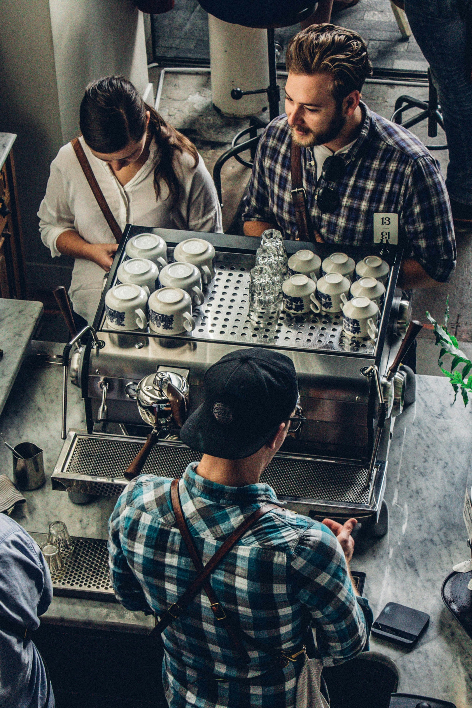
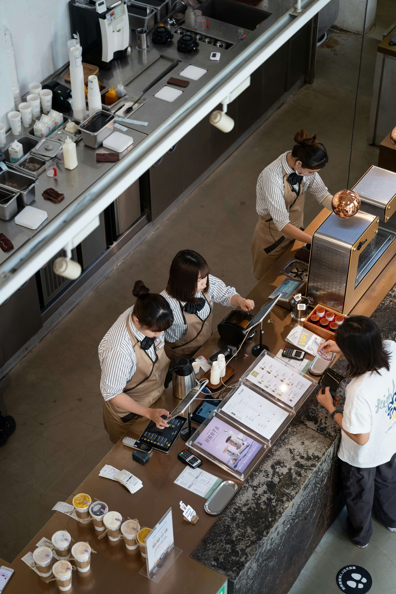
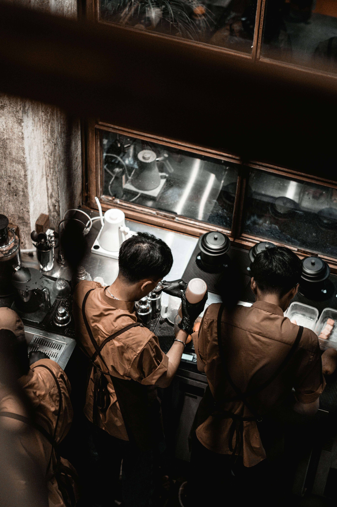
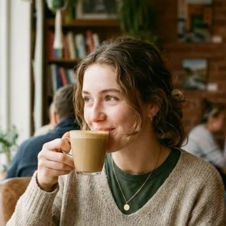

Windah Bersaudara
Founder & Head Barista
Memulai Kedai Kopi Nusantara dari kecintaannya menjelajahi kopi khas berbagai daerah, dengan pengalaman meracik lebih dari 5 tahun.



Didirikan pada tahun 2019, Kedai Kopi Nusantara lahir dari kerinduan sederhana untuk menghadirkan kembali cita rasa kopi asli Indonesia yang selama ini tersembunyi di balik nama daerahnya masing-masing. Seperti kata "Nusantara" yang kami usung, kami percaya kekayaan kopi Indonesia tersebar dari Sabang sampai Merauke, dan kami ingin menyatukannya dalam satu cangkir yang bisa dinikmati siapa saja, di mana saja.
Kami bekerja sama langsung dengan petani kopi pilihan di Gayo, Toraja, Kintamani, dan Flores,
memastikan setiap biji yang kami sangrai membawa cerita dan karakter aslinya. Dengan racikan
yang diolah penuh perhatian oleh barista kami, kami ingin setiap cangkir yang kamu pesan bukan
sekadar minuman, tapi juga perjalanan rasa keliling Nusantara, disajikan dalam suasana kedai
yang hangat, seperti rumah kedua bagi siapa saja yang mampir.
Menjadi kedai kopi lokal yang paling dipercaya dalam menghadirkan cita rasa kopi Nusantara yang otentik, sekaligus menjadi ruang ketiga yang hangat bagi masyarakat berbagai kalangan.
Memulai Kedai Kopi Nusantara dari kecintaannya menjelajahi kopi khas berbagai daerah, dengan pengalaman meracik lebih dari 5 tahun.

Ahli memilih dan menyangrai biji kopi pilihan agar setiap cangkir punya cita rasa terbaik.
Memastikan operasional kedai berjalan lancar dan pengalaman pelanggan selalu menyenangkan.